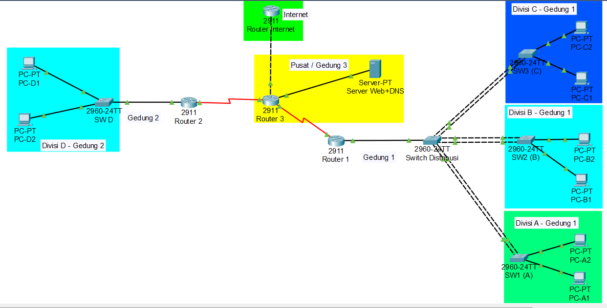
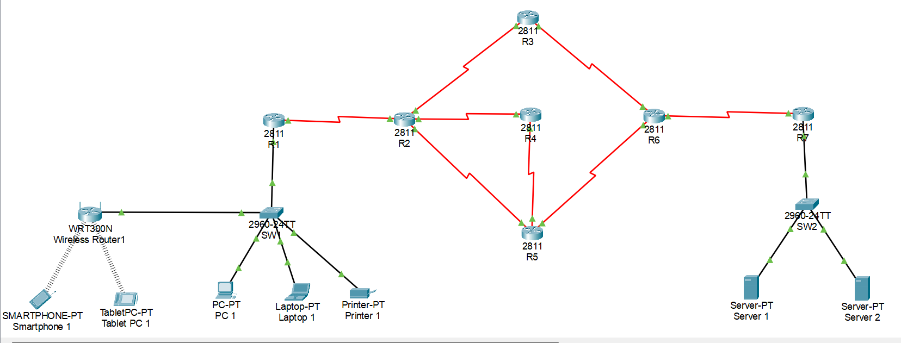

Topologi Jaringan
Desain dan simulasi arsitektur jaringan menggunakan Cisco Packet Tracer. Proyek ini berfokus pada optimalisasi jaringan untuk memastikan komunikasi yang efisien dan aman antar perangkat. Di dalamnya, saya mengimplementasikan konfigurasi jaringan yang komprehensif, mulai dari Routing Statik hingga Routing Dinamis (RIP v2, OSPF, EIGRP, dan BGP). Selain itu, topologi ini juga mencakup segmentasi jaringan melalui VLAN dan Inter-VLAN, optimalisasi bandwidth dengan EtherChannel, pengamanan jalur keluar masuk dengan NAT, serta integrasi layanan dasar jaringan seperti DHCP, DNS, dan Web Server.
Topologi Tugas Besar Mata Kuliah Jaringan Komunikasi Data

Topologi yang dipakai saat workshop
